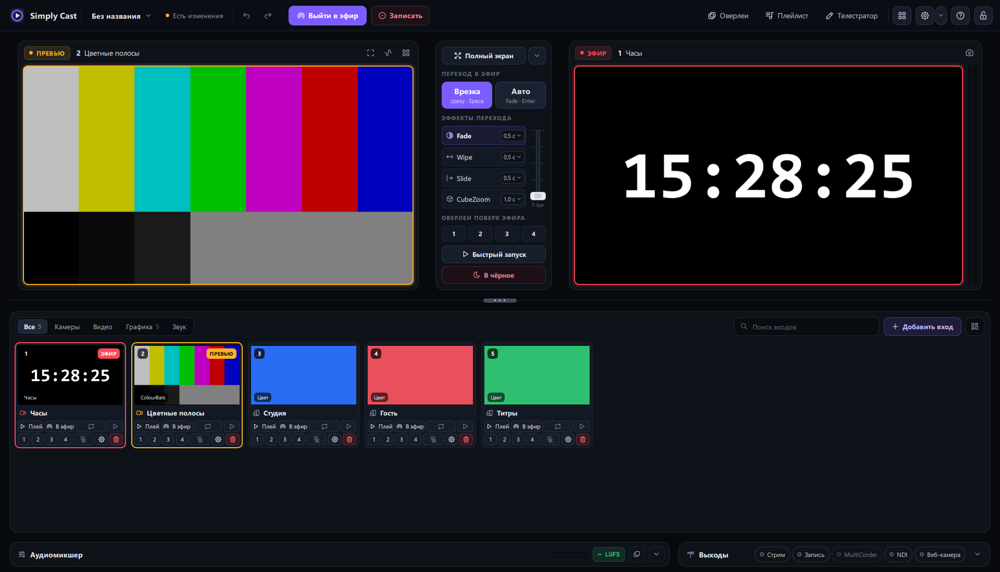

Эфир, запись и стрим.
Без ключей и подписок.
Видеомикшер для Windows: камеры, экраны, NDI и веб-графика — в эфир, в файл и на стриминговые платформы одновременно.

Всё, чтобы выйти в эфир.
Знакомый процесс: собрали кадр в превью, перевели в эфир — переходом, T-bar или клавишей.
Превью и эфир
Врезка и авто-переход, T-bar, затемнение и «в чёрное». Оверлеи поверх эфира одним нажатием.
Любые источники
Камеры, экран, видео, картинки, NDI, веб-страницы и титры.
Стрим и запись
Файл, RTMP(S) и SRT — сразу в несколько направлений. Кодирование на NVIDIA или AMD.
Аудиомикшер
Шины, solo, AFV, метры и громкость в LUFS. Звук синхронен с видео.
Не падает в эфире
Камера без сигнала отпускается, стрим переподключается, проект возвращается после сбоя.
Ключи в безопасности
Ключи стримов хранятся в диспетчере учётных данных Windows, а не в проекте.
Три шага до эфира.
Никаких мастеров активации и настроек на час.
Добавьте входы
Камера, экран, видеофайл или мастер первого шоу — плитки появятся сами.
Соберите кадр
Выберите вход в превью и переведите в эфир переходом или клавишей Space.
Выходите в эфир
«Выйти в эфир» или «Записать» — можно и то и другое одновременно.
Эфиром — с телефона и планшета.
- Живые мониторы. Превью и эфир 16:9 прямо на экране планшета.
- Сам находит ПК. Включите «Управление с телефона» и отсканируйте QR.
- Камера телефона — ещё один вход с минимальной задержкой.
Бесплатно. Без регистрации.
Для любого использования — личного и коммерческого.
Установщик для Windows
Обычная установка с ярлыками. Для парка машин — тихая установка с ключом /VERYSILENT.
Один файл
Переносная сборка: запускается из любой папки, ничего не прописывает в системе.
Скачать .exe41 МБ · Windows 10/11 x64Пульт для Android
Управление эфиром с телефона или планшета. Разрешите установку из неизвестных источников.
Скачать .apk1,5 МБ · AndroidКоротко о главном.
Что нужно для записи и стрима?
Любой компьютер с Windows 10/11. Simply Cast кодирует видеокартой NVIDIA или AMD, а без них — встроенным кодером Windows. Для AV1 нужна NVIDIA или AMD.
Нужен ли NDI отдельно?
Нет, движок NDI идёт в комплекте: входы и выход NDI работают сразу.
Работает ли с пультами и по API?
Есть HTTP и TCP API, веб-пульт для телефона и приложение для Android. Для пультов, рассчитанных на распространённый XML-формат, — «Проект → Совместимый XML API».
Отправляет ли Simply Cast данные?
Нет. Он ищет NDI-источники в локальной сети и работает только с тем, что вы настроили.
Есть ли версия для Mac?
Пока нет.
Соберите первый эфир за пару минут.
Скачайте, добавьте камеру и нажмите «Выйти в эфир».
Скачать для Windows